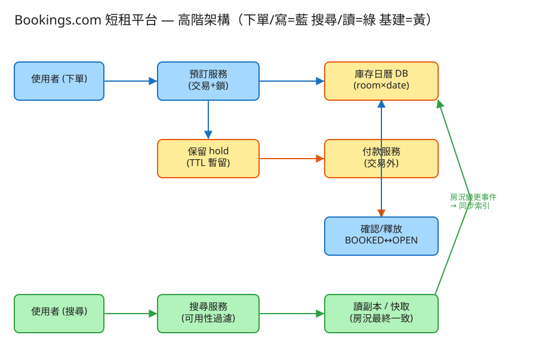

⑫ Bookings.com 短租平台 · 初學者友善版
C 一致性/交易
看故事就懂
輕鬆讀 25 分鐘
🧠 這份怎麼讀？
這份用「大腦比較好吸收」的方式重寫：先講生活比喻 → 把系統拆成小關卡 → 邊讀邊考自己 。
分成兩部分：Part 1 概念 （這系統在幹嘛）、Part 2 工程細節 （怎麼真的蓋出來，一樣白話）。
遇到 💭 停一下 就先自己想 3 秒再往下看——這叫「提取練習」，比一直往下滑記得更牢。
1. 60 秒搞懂它在幹嘛
想像你開了一間民宿出租網站（像 Booking.com、Airbnb）。網站上有幾百萬間房，每間房的每一個晚上，
只能賣給一個人 。使用者搜尋「東京、6/1 入住、6/4 退房、2 人」，你要回傳那幾晚都還空著的房；
他選好按下訂，你要把那幾晚鎖起來收進他名下 ，再讓他去付款。
聽起來像普通購物網站？關鍵差別在這句：同一間房、同一個晚上，絕對不能同時賣給兩個人。
這件事在「很多人同時搶同一間熱門房」的時候，特別容易出包。
🔑 一句話
訂房平台 = 把「房間 × 日期」當成一格一格的座位，每格只能賣一次的搶位系統 ：
搜尋空房 → 按下訂時把那幾晚原子地佔起來（絕不重複）→ 給你 10 分鐘去付款，沒付就放回去。
2. 為什麼「兩個人訂到同一晚」這麼難防？
你可能想：「不就是先查還空著、再標記成已訂嗎？」問題就出在「查」和「標記」中間的那一瞬間 。
🍿 電影院搶最後一排情侶座
A 和 B 同時打開訂票網，都看到「H8 還空著」（這是「查」）。兩人都很開心，幾乎同一秒 按下「我要這個位」（這是「標記」）。
如果系統只是「看到空就讓你訂」，那兩個人都會被告知「訂到了」——結果開場時兩組人拿著同一張票，站在 H8 前面大眼瞪小眼。
這個「兩人之間夾縫搶到同一格」的問題，工程上叫 並發（concurrency） 。難點不在「網站要扛多少流量」（其實下單沒那麼頻繁），
而在「同一格的搶奪，必須有人贏、有人輸，不能兩個都贏」 。這就是這題的靈魂。
而解法的核心思想是：「查」跟「標記」不能分開做，要綁成一個「不可被打斷」的動作。
就像搶座位時，不是「先看空不空、再慢慢決定」，而是「一把手按下去，按到的人立刻獨佔，別人這一刻碰不到」。
💭 停一下：如果改成「先全部讓人訂，等付款時再來看誰重複、退錢給輸的人」，會有什麼後果？
看答案
使用者體驗很差：你以為訂到了、開心訂了機票安排了行程，結果隔天收到「抱歉房間被搶走了，退您錢」。
對熱門房源這種「超賣再退款」會頻繁發生。所以訂房系統選擇在下單當下就把關 ，當場告訴你成功或失敗，而不是事後反悔。
（有些低價航空真的會故意超賣再補償，但住宿體驗上通常不接受。）
3. 把系統拆成 4 個關卡
別被「系統」嚇到。整件事其實就是闖 4 關，一關一關來：
1 搜尋：哪些房「那幾晚都空著」？使用者給你地點 + 入住日 + 退房日。你要回傳「這段期間每一晚都還空 」的房。
注意是「每一晚都要空」——只要中間有一晚被別人訂了，這間就不能出現在結果裡。
🏨 比喻 就像櫃台幫你查「6/1 到 6/4 連住三晚」，他得確認 6/1、6/2、6/3 三個晚上每一晚的房卡都還在架上 ，缺一晚就不行。
👉 這一關是「讀」 ，量很大但不怕一點點不準——搜尋結果偶爾顯示一間「其實剛被別人訂走」的房，沒關係，下一關下單時會擋下來。
2 下單：把那幾晚「一次佔起來」（防超賣核心）使用者選好按下訂。系統要把 6/1、6/2、6/3 三晚同時佔起來 ，而且要嘛三晚全成功、要嘛全失敗
（不能只佔到 6/1、6/2，6/3 被別人搶走，那這筆訂單就殘缺了）。這就是這題最重要的動作。
🔒 比喻：搶座位的兩種手法
要確保「沒人跟你搶同一格」，現實中有兩種思路，等等第 4 關還會再用到 ——① 先鎖門慢慢填（悲觀）： 進房間先把門反鎖，確定沒別人，再慢慢在表格上簽名。② 大家一起填、結帳分勝負（樂觀）： 不鎖門，誰都能寫，但最後系統檢查「這格是不是只有你一個人寫成功」，誰先誰贏，輸的重來。
這一關是「寫」 ，而且是最需要「絕對正確」的地方。下一段的第 4 關會專門講這兩種手法怎麼選。
3 保留：給你 10 分鐘去付款（hold / TTL）佔到位之後，使用者要去刷卡。但刷卡是慢的 （要連到銀行，可能好幾秒），
總不能在這幾秒裡把整間房的資料庫卡死，害別人都不能動。
🎫 比喻：演唱會選位「保留 10 分鐘」
你在售票網選好位子，畫面跳出「已為您保留，請在 10 分鐘內完成付款 」。
這 10 分鐘內位子是你的、別人選不到；但你要是 10 分鐘沒付款，系統就自動把位子放回去 ，讓別人能選。
訂房一模一樣：下單先把那幾晚標成「保留中（HELD） 」並記一個到期時間（TTL，例如 10 分鐘）。
付款成功 → 轉成正式訂單；付款失敗或逾時沒付 → 自動釋放 ，那幾晚又變回可訂。
這樣「鎖資料庫」只佔幾毫秒（佔位那一下），慢吞吞的付款是在鎖外面慢慢做的。
4 悲觀鎖 vs 樂觀鎖：搶位到底用哪招？第 2 關說「把那幾晚一次佔起來」，到底怎麼保證「不會兩個人都佔到」？回到剛剛的兩種手法，攤開來看：
🚪 悲觀鎖：先把房門鎖起來慢慢填
「我先假設一定有人要跟我搶 」，所以一進來就把那幾晚的格子鎖住 ，別人想動只能在門外排隊等。
我在鎖裡面從容確認「三晚都空 → 全部標記成我的」，做完才開鎖。超熱門 的房（大家狂搶）：先排隊省得做白工。👎 別人會被卡住等，鎖太多格還可能互相卡死（死結）。
🏃 樂觀鎖：大家都填，結帳時誰先誰贏
「我樂觀地假設多半沒人跟我搶 」，所以不鎖門，直接寫：「把這三晚還是空的話 改成我的」。
系統回我：「成功改了幾格？」——剛好三格＝我全拿下；少於三格＝有人搶先了，這筆作廢，我重試 一次。大多數沒在搶 的房：沒人被鎖住、跑得快。👎 真的撞上了要重來。
💡 實務上：多數房間用樂觀（快又簡單） ，只有極熱門（連假的明星民宿）才動用悲觀鎖或「發號碼牌排隊」。
✅ 四關一句話
① 搜尋 那幾晚全空的房 → ② 下單把區間一次原子佔起來 → ③ 給 10 分鐘保留 去付款（沒付就放回） → ④ 用悲觀／樂觀鎖 確保同一格只有一人搶到。
4. 設計時最怕的 3 件事
工程上的「取捨」聽起來很抽象。換個方式記：這個系統最怕三件事 ，每個設計都是為了避開某個「怕」。
😱 怕「超賣」（同一晚賣給兩個人）
這是頭號大忌 。客人千里迢迢飛到東京，發現房間被別人也訂了、沒地方睡——這是會上新聞的災難。
所以下單那一步寧可慢一點、也要絕對正確 ：同一房同一晚，只能有一個人搶到。正確 > 一切。
😱 怕「鎖太久，大家都動不了」
如果為了安全，下單時把房間鎖住、等使用者慢慢刷完卡才放開，那刷卡那幾秒裡整間房誰都不能訂 ，網站會卡到爆。
所以才要把流程拆成「佔位（毫秒，鎖住） 」和「付款（幾秒，不鎖） 」兩段，中間用 hold/TTL 銜接。鎖只能持有一瞬間。
😱 怕「保留了卻不付款，房間被白白佔住」
如果有人下單佔了位、卻一直不付款也不取消，那這幾晚就卡死沒人能訂 ，平台少賺錢。
所以保留一定要有「到期自動放回 」（TTL），不能依賴使用者乖乖點取消。沒付款的保留，時間到就收回。
5. 一張圖看懂

✏️ 用 Excalidraw 開啟編輯（diagram.excalidraw）
白話導讀，分成「讀」和「寫」兩條路：
🔍 搜尋（讀，量大） ：查「房況快取／讀副本」——這份資料可能稍微舊一點 沒關係，反正下單會再把關 →
🛒 下單（寫，要正確） ：走預訂服務 ，開一個「交易（不可被打斷的動作）」，把區間每一晚鎖住＋確認都空＋一次佔起來 →
⏳ 佔成功後變成 保留（HELD） ＋記一個 10 分鐘到期時間 →
💳 使用者去付款 （在鎖外面慢慢做）：成功 → 轉成正式訂單（BOOKED）；失敗或逾時 → 放回去（OPEN） →
🧹 一個背景清潔工 定時掃描「過期還沒付款的保留」，把它們釋放掉。
6. 名詞白話翻譯
看完上面，這些詞你其實都已經懂了，這裡只是把「工程術語 ↔ 白話」對起來，Part 2 會用到：
工程術語 白話解釋 超賣 (oversell) 同一晚同一間房，不小心賣給了兩個人（頭號大忌） 並發 (concurrency) 很多人「同時」動同一筆資料，要決定誰贏 悲觀鎖 「先把房門鎖起來慢慢填」：先鎖住別人才不能搶 樂觀鎖 / CAS 「大家都填、結帳時誰先誰贏」：不鎖、寫完才檢查有沒有撞到 hold / TTL 下單先保留、給 10 分鐘付款，逾時自動放回（演唱會選位那套） 原子 (atomic) 「全部成功，否則全部當沒發生」的一整包動作，不會做一半 交易 (transaction) 把好幾個動作綁成一包，要嘛全成、要嘛全退（達成原子） 強一致 vs 最終一致 下單要「馬上正確」；搜尋可以「稍微舊一點、過幾秒才一致」 讀副本 / 快取 專門服務「查詢」的副本，分擔主資料庫壓力 冪等 (idempotent) 同個動作做幾次，結果都一樣（防重複點兩下變兩筆） Saga / 補償 跨系統出包時的「善後流程」：訂到了卻沒房 → 自動退款 分片 (sharding) 資料太大，切成好幾塊放不同機器
🛠️ Part 2 ｜ 工程細節（一樣白話）
概念懂了，來看「真的要動手蓋，得想清楚哪些事」。一樣用比喻，不用怕。
7. 要準備多大？（規模估算）
🍱 比喻：辦活動前先估人數
辦活動前，你會先估「大概來幾個人」，才決定訂幾個便當、租多大場地 。
系統設計也一樣：先估數字，才知道要準備多大的「料」。這一步叫規模估算 。
我們估幾個關鍵數字（數字不必背，重點是感受它的「形狀」 ）：
估什麼 大概數字 所以呢？ 有多少間房 500 萬間 每間要維護未來約一年的「每日房況」 總共多少「格」房況 500 萬間 × 365 天 ≈ 18 億格 資料很大（約 90GB），要切塊（分片）存 每天多少人在搜尋（讀） ~1 億次／天 讀超多，要用快取／讀副本分擔 每天多少筆下單（寫） ~500 萬筆／天 換算下來每秒才幾百筆，其實不多
💡 關鍵洞察：難的不是「量」，是「正確」
這題跟很多系統不一樣：下單的量其實不大（每秒幾百筆） ，機器扛得住。
真正的難點是「同一格被很多人同時搶 」時，要保證只有一個人贏——這是正確性 問題，不是流量 問題。
讀（搜尋）量大但不怕一點點舊，可以放鬆；寫（下單）量小但一點都不能錯。
💭 停一下：既然下單每秒才幾百筆，為什麼還會「塞車」？
看答案
因為塞車不是塞在「總量」，而是塞在同一間熱門房的同一格 。連假時某間網紅民宿，可能上千人同時搶同一晚——
這一格的搶奪本質上沒辦法「平行」處理 （必須一個一個來決勝負），所以熱點會卡。一般冷門房則完全不會塞。8. 系統之間怎麼溝通？（API）
🍔 比喻：點餐單
API 就是兩個系統之間講好的「點餐單格式 」：你要點什麼（給我哪些欄位）、我回你什麼。
講好格式，雙方就能合作，不用知道對方廚房怎麼運作。
這題記住四張「點餐單」，剛好對應前面四關：
① 搜尋空房（讀，最高頻，可查稍舊的快取）
GET /search?city=Tokyo&checkin=6/1&checkout=6/4&guests=2
我回：那段期間「每一晚都空」的房清單這張單走「讀副本／快取 」就好，結果稍微舊一點沒關係——真正把關留到下單那一步。
② 建立保留（寫，進交易＋鎖；成功就佔位＋給到期時間）
POST /holds 給我：{ 房號, 入住日, 退房日 }
我回：201 { 保留編號, 10分鐘後到期 } ← 佔位成功
我回：409「部分日期已被預訂」 ← 區間有任一晚被搶走，整筆拒絕這就是「下單佔位」那一關。只要區間裡有一晚不可用，整筆就拒絕（回 409） ——不接受「只訂到一半」。
③ 確認（付款成功後，把保留轉成正式訂單）
POST /holds/{保留編號}/confirm 給我：{ 付款憑證 }
我回：200 { 訂單編號, 狀態:已確認 }為什麼分「保留」和「確認」兩張單？因為付款很慢（要連銀行） ，不能讓它佔著資料庫的鎖。先用第一張單毫秒級佔好位、馬上放鎖；付款在外面慢慢做；好了再用這張單轉正。鎖只持有一瞬間。
④ 取消／釋放（或時間到由背景自動放回）
DELETE /holds/{保留編號}使用者主動取消、或 10 分鐘沒付款由背景清潔工自動釋放，那幾晚就變回可訂。
9. 系統要記住哪些事？（資料模型）
📒 比喻：幾本筆記本
系統要把資料記在「筆記本」（資料表）裡。這題的靈魂在第二本「房況日曆簿」的設計 ：
📅 房況日曆簿（核心！把「日期」攤成「一晚一列」）最重要的設計：不要 把「這間房哪些天可訂」全塞進一個欄位。而是一個晚上記一列 ：
房號 + 日期 → 狀態(空 OPEN／保留中 HELD／已訂 BOOKED)。
🗓️ 為什麼這樣攤開？
想像一本「每間房一頁、每頁 365 個格子 」的日曆。訂 6/1–6/4，就是去蓋住 6/1、6/2、6/3 三個格子。
這樣每一格天生獨立，而且我們可以把「房號＋日期 」設成「不准重複」的鑰匙——就算程式寫錯，資料庫也會擋下「同一格被填兩次」 ，這是防超賣的最後一道防線。
⏳ 保留簿（誰保留了、何時到期）每筆保留一列：保留編號、房號、入住/退房日、到期時間 、狀態(保留中／已確認／已釋放)。
那個「到期時間」就是 TTL，背景清潔工靠它判斷「這筆過期了，放回去」。
🧾 訂單簿（付款成功後的正式訂單）付款成功，保留就「轉正」成正式訂單：訂單編號、對應哪筆保留、誰訂的、房號、日期、狀態。
💭 停一下：訂 6/1 入住、6/4 退房，到底佔了「幾個晚上」的格子？
看答案
佔 3 晚：6/1、6/2、6/3 。退房當天 6/4 不算 （那天你早上就走了）。
這樣 A 訂到 6/4 早上退、B 從 6/4 下午入住，可以無縫銜接，這是真實飯店的算法——也是最常見的「邊界 bug」考點。10. 哪裡會塞車、怎麼拓寬？（擴展）
🚗 比喻：找出塞車路段，拓寬它
系統變大時，總有某個環節會先「塞車」。工程師的工作就是找出最會塞的地方，把它拓寬 。一個一個看：
哪裡會塞車 怎麼拓寬 搜尋和下單擠在同一個資料庫 讀寫分開 ：搜尋查「讀副本」，下單才碰主資料庫搜尋（讀）量太大 把房況做成快取 ，容忍稍微舊一點（下單時再把關） 熱門房同一格被狂搶（寫熱點） 縮短鎖的時間、用樂觀鎖重試，極熱門就排隊發號碼牌 18 億格房況存不下 依房號切塊（分片） 分散到多台機器；過期日期歸檔 過期保留太多，清潔工掃不完 對「到期時間」建索引、分批掃 ；或在使用者讀到時順手釋放
11. 還有哪些「魚與熊掌」？（取捨）
「Part 1 的三個怕」是核心取捨。這裡補幾個常被面試官追問的：
⚖️ 悲觀鎖 vs 樂觀鎖
熱門房（大家狂搶）用悲觀 （先鎖門、少做白工，但會卡別人）；冷門房用樂觀 （不鎖、快，但撞到要重試）。
鎖多格時務必固定順序加鎖 （例如一律照日期由小到大），不然兩筆訂單互相等對方的格子會「卡死」（死結）。
⚖️ 強一致 vs 最終一致
下單／扣庫存要強一致 （當場就對，用交易把關）；搜尋／房況展示可以最終一致 （查快取，容忍偶爾顯示一間其實剛被訂走的房）。把「要正確」和「要快」分開放在對的地方。
⚖️ 先佔位再付款（hold）vs 直接邊付款邊鎖
直接把付款塞進鎖裡 → 鎖被慢付款卡住，吞吐崩潰；先 hold 再付款 → 鎖只持毫秒，但要多處理「逾時釋放」和「付款成功了但保留已過期、房被別人訂走」的善後。
💭 追問：付款成功了，但保留已經過期、那幾晚被別人訂走了，怎麼辦？
這是經典難題。做法：confirm（轉正）之前再驗一次房還在不在 ；萬一真的沒了，就走「補償流程（Saga）」——自動退款＋道歉 ，
或幫他找同等替代房。寧可事後補償，也不能把房真的賣兩次。💭 追問：怎麼防止使用者手抖點兩下、變成兩筆訂單？
用「冪等鍵 」：同一個保留編號只能轉正一次，第二次點過來系統認得「這個我做過了」，直接回上次的結果，不會變成兩筆。12. 動手玩玩看
讀十遍不如玩一遍。這題有一個真的可以跑 的小程式，讓你親眼看到「防超賣 + 保留 + 釋放」：
# 啟動（在這題的 demo 資料夾裡）
cd demo
php -S localhost:8012 -t public
# 然後瀏覽器打開 http://localhost:8012
先建一間房的房況（等於開好那本「日曆簿」）。
用兩個視窗同時訂同一房、同一個日期 → 觀察：只有一個成功，另一個被拒（409） 。這就是防超賣！
下單後不付款 ，等保留時間（TTL）到 → 看那幾晚自動放回 、又能訂了。
玩的時候想一下 兩個視窗搶同一格，為什麼一定有一個會收到 409？因為系統把「檢查＋佔位」綁成了一個不可被打斷的動作（交易＋鎖），輸的那個一進來就發現「已經不是空的了」。這就是關卡 2＋關卡 4 在運作。
13. 考考自己
先不要看答案，自己用講給朋友聽 的方式回答看看（講得出來才是真的懂）：
Q1：用「電影院搶座位」解釋，為什麼會發生超賣？
因為「查還空不空」和「標記成已訂」中間有空隙。兩個人幾乎同時看到 H8 是空的（查），又幾乎同時按下訂（標記），如果系統只要看到空就放行，兩個人都會以為訂到了。要把「查＋標記」綁成一個不可被打斷的動作才能避免。Q2：悲觀鎖和樂觀鎖差在哪？各適合什麼情況？
悲觀＝「先把房門鎖起來慢慢填」，先假設有人搶、先鎖住別人，適合超熱門房（少做白工但會卡別人）。樂觀＝「大家都填、結帳時誰先誰贏」，先假設沒人搶、不鎖直接寫、寫完檢查有沒有撞到，適合冷門房（快但撞到要重試）。Q3：hold / TTL 是什麼？用演唱會選位的比喻說說看。
像售票網「已為您保留位子，請 10 分鐘內付款」。下單先把那幾晚標成「保留中」並記到期時間，這段時間別人訂不到；付款成功就轉正式訂單，逾時沒付就自動放回去讓別人訂。目的是不讓慢吞吞的付款把資料庫鎖卡死。Q4：訂 6/1 入住、6/4 退房，佔了幾個晚上？哪一天不佔？
佔 6/1、6/2、6/3 共 3 晚；退房當天 6/4 不佔（那天早上就走了）。這樣別人能從 6/4 接著入住，是真實飯店語意，也是常見邊界 bug。Q5（工程）：為什麼下單要拆成「保留」和「確認」兩步，而不是一步到底？
因為付款是慢的外部呼叫（要連銀行，好幾秒）。若把付款塞進佔位的鎖裡，鎖會被卡好幾秒，整間房誰都不能動、吞吐崩潰。拆成兩步：第一步毫秒級佔位（鎖只持一瞬間就放開），付款在鎖外面慢慢做，成功再用第二步轉正。Q6（工程）：為什麼把「房號＋日期」設成不准重複的主鍵，是防超賣的最後防線？
因為就算應用程式的鎖邏輯寫錯、漏判，資料庫層的唯一性約束也會擋下「同一格被填第二次」——同一房同一晚不可能存在兩列。多一道保險，即使上層有 bug 也不會真的把同一晚賣兩次。Q7（工程）：這題下單每秒才幾百筆，為什麼還會「塞車」？怎麼處理熱點？
塞車不是塞總量，是塞在「同一間熱門房的同一格」——上千人搶同一晚，這格的勝負沒辦法平行處理，必須一個一個來。處理：縮短鎖的時間、用樂觀鎖重試，極熱門就排隊發號碼牌、限流。冷門房完全不會塞。14. 30 秒回顧
訂房平台 = 把「房間 × 日期」當成一格一格的座位，每格只能賣一次的搶位系統。
4 個關卡： ① 搜尋那幾晚全空的房 → ② 下單把區間一次原子佔起來 → ③ 給 10 分鐘保留去付款（沒付就放回，hold/TTL）→ ④ 用悲觀鎖（先鎖門慢慢填）或樂觀鎖（大家都填、誰先誰贏）確保同一格只有一人搶到。
3 個怕： 怕超賣（同晚賣兩人，正確壓倒一切）、怕鎖太久（佔位毫秒、付款在鎖外）、怕保留不付款佔住房（到期自動放回）。
工程細節一句話： 難在「正確」不在「流量」→ 房況攤成「一晚一列」、（房號+日期）當主鍵做最後防線 → 讀走快取（容忍稍舊）、寫走交易（強一致）→ 找出熱門房同格的寫熱點各自拓寬。
想看更精簡、面試速查用的版本？👉 前往完整版 （同樣內容的工程速查格式）。
⑫ Bookings.com 短租平台 · 初學者友善版 · 系統設計學習專案